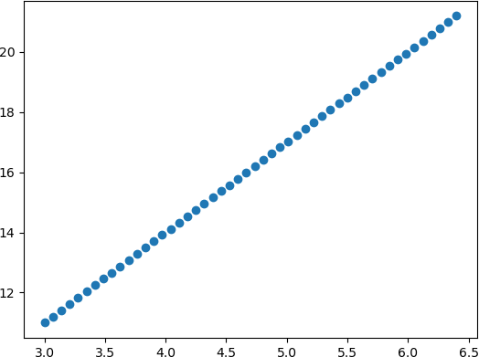
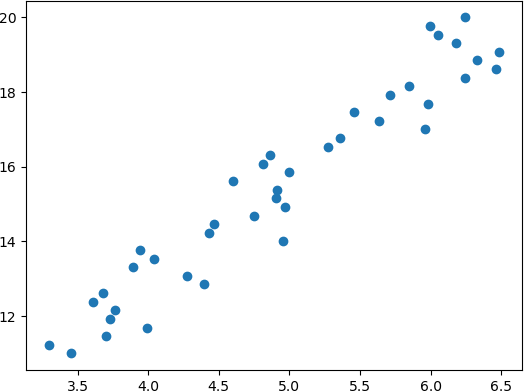
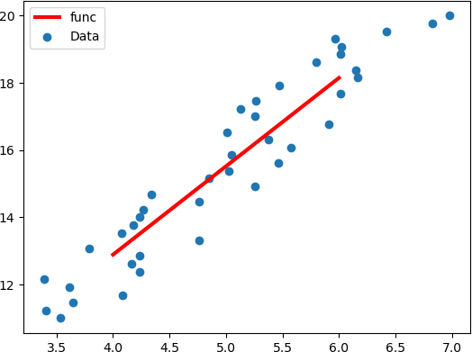

sklearn应用线性回归算法
Scikit-learn 简称 sklearn 是基于 Python 语言实现的机器学习算法库，它包含了常用的机器学习算法，比如回归、分类、聚类、支持向量机、随机森林等等。同时，它使用 NumPy 库进行高效的科学计算，比如线性代数、矩阵等等。
Scikit-learn 是 GitHub 上最受欢迎的机器学习库之一，其最新版本是 2020 年12 月发布的 scikit-learn 0.24.1。
打印输出结果如下所示：
虽然做标签散乱分布，但是使用线性回归算法学习依然可以得到线性函数，此时 w 与 b 的输出结果如下所示：
线性回归适用于有监督学习的回归问题，首先在构建线性模型前，需要准备好待输入的数据集，数据集按照需要可划分为训练集和测试集，使用训练集中的向量 X 与向量 Y 进行模型的训练，其中向量 Y 表示对应 X 的结果数值(也就是“参考答案”)；而输出时需要使用测试集，输入测试 X 向量输出预测结果向量 Y。
其实线性回归主要解决了以下三个问题：
线性回归算法简单，且容易理解，但这并不影响它的广泛应用，比如经济金融领域实现股票的预测，以及著名的波士顿房价预测，这些都是线性回归的典型应有，因此我们要走出一个误区，不要感觉算法简单就不重要，机器学习虽然算法众多，但每一种算法都有其存在的理由，而掌握了线性回归就相当于拿到了算法世界的入场券。
Scikit-learn 是 GitHub 上最受欢迎的机器学习库之一，其最新版本是 2020 年12 月发布的 scikit-learn 0.24.1。
提示：Scikit-learn 官方网站：https://scikit-learn.org/stable/
Scikit-learn 涵盖了常用的机器学习算法，而且还在不断的添加完善，对于本教程所涉及的机器学习算法它都做了良好的 API 封装，以供直接调用。你可以根据不同的模型进行针对性的选择。下面介绍 sklearn 中常用的算法库：- ·linear_model：线性模型算法族库，包含了线性回归算法，以及 Logistic 回归算法，它们都是基于线性模型。
- .naiv_bayes：朴素贝叶斯模型算法库。
- .tree：决策树模型算法库。
- .svm：支持向量机模型算法库。
- .neural_network：神经网络模型算法库。
- .neightbors：最近邻算法模型库。
实现线性回归算法
下面我们是基于 sklearn 实现线性回归算法，大概可以分为三步，首先从 sklearn 库中导入线性模型中的线性回归算法，如下所示：from sklearn import linear_model其次训练线性回归模型。使用 fit() 喂入训练数据，如下所示：
model = linear_model.LinearRegression() model.fit(x, y)最后一步就是对训练好的模型进行预测。调用 predict() 预测输出结果， “x_”为输入测试数据，如下所示：
model.predict(x_)你可能会感觉 so easy，其实没错，使用 sklearn 算法库实现线性回归就是这么简单，不过上述代码只是一个基本的框架，要想真正的把这台“机器”跑起来，我们就得给它喂入数据，因此准备数据集是必不可少的环节。数据集的整理也是一门专业的知识，会涉及到数据的收集、清洗，也就是预处理的过程，比如均值移除、归一化等操作，如果熟悉 Pandas 的话应该了解， 因此这里不做重点讲解。
1) 准备数据
下面我们手动生成一个数据集，如下所示：# 使用numpy准备数据集 import numpy as np # 准备自变量x,-3到3的区间均分间隔30份数 x = np.linspace(3,6.40) #准备因变量y，这一个关于x的假设函数 y = 3 * x + 2
2) 实现算法
#使用matplotlib绘制图像，使用numpy准备数据集
import matplotlib.pyplot as plt
import numpy as np
from sklearn import linear_model
#准备自变量x，生成数据集，3到6的区间均分间隔30份数
x = np.linspace(3,6.40)
#准备因变量y，这一个关于x的假设函数
y = 3 * x + 2
#由于fit 需要传入二维矩阵数据，因此需要处理x，y的数据格式,将每个样本信息单独作为矩阵的一行
x=[[i] for i in x]
y=[[i] for i in y]
# 构建线性回归模型
model=linear_model.LinearRegression()
# 训练模型，"喂入"数据
model.fit(x,y)
# 准备测试数据 x_，这里准备了三组，如下：
x_=[[4],[5],[6]]
# 打印预测结果
y_=model.predict(x_)
print(y_)
#查看w和b的
print("w值为:",model.coef_)
print("b截距值为:",model.intercept_)
#数据集绘制,散点图，图像满足函假设函数图像
plt.scatter(x,y)
plt.show()
通过线性回归得到的线性函数图像，如下所示：

图1：线性回归函数图像
图1：线性回归函数图像
打印输出结果如下所示：
测试集输出结果： [[14.] [17.] [20.]] w值为: [[3.]] b截距值为: [2.]通过上述代码我们就实现“线性回归”的过程，但是在实际情况中，我们要面临的数据集要复杂的多，绝大多数情况不会这样理想，都会存在一些波动。在生成数据集的代码段内添加以下代码，如下所示：
#准备自变量x，生成数据集，3到6的区间均分间隔30份数 x = np.linspace(3,6.40) #准备因变量y，这一个关于x的假设函数 y = 3 * x + 2 # 添加代码，扰乱点的分布 x = x + np.random.rand(40)利用 NumPy 的 random. rand() 随机生成 0 - 1 之前的波动数值，从而改变数据点的分布情况，如下所示：

图2：修改后的散点分布
图2：修改后的散点分布
虽然做标签散乱分布，但是使用线性回归算法学习依然可以得到线性函数，此时 w 与 b 的输出结果如下所示：
w值为: [[2.68673744]] b截距值为: [0.80154335]绘制最佳拟合直线，程序代码如下：
#使用matplotlib绘制图像，使用numpy准备数据集
import matplotlib.pyplot as plt
import numpy as np
from sklearn import linear_model
#准备自变量x，生成数据集，-3到3的区间均分间隔30份数
x = np.linspace(3,6,40)
#准备因变量y，这一个关于x的假设函数
y=3 * x + 2
x = x + np.random.rand(40)
#准备因变量y，这一个关于x的假设函数
#由于fit 需要传入二维矩阵数据，因此需要处理x，y数据格式,将每个样本信息单独作为矩阵的一行
x=[[i] for i in x]
y=[[i] for i in y]
model=linear_model.LinearRegression()
model.fit(x,y)
#准备测试数据 x_，这里准备了三组，如下：
x_=[[4],[5],[6]]
# 打印预测结果
y_=model.predict(x_)
print(y_)
#查看w和b的
print("w值为:",model.coef_)
print("b截距值为:",model.intercept_)
#数据集绘制,散点图，图像满足函假设函数图像
plt.scatter(x,y)
#绘制最佳拟合直线
plt.plot(x_,y_,color="red",linewidth=3.0,linestyle="-")
plt.legend(["func","Data"],loc=0)
plt.show()
函数图像如下所示：

图3：拟合直线绘制
图3：拟合直线绘制
线性回归步骤
通过上述代码了解了如何使用 Python sklearn 实现线性回归，下面从总整体出发再次审视该算法：掌握线性回归算法的具体步骤。线性回归适用于有监督学习的回归问题，首先在构建线性模型前，需要准备好待输入的数据集，数据集按照需要可划分为训练集和测试集，使用训练集中的向量 X 与向量 Y 进行模型的训练，其中向量 Y 表示对应 X 的结果数值(也就是“参考答案”)；而输出时需要使用测试集，输入测试 X 向量输出预测结果向量 Y。
其实线性回归主要解决了以下三个问题：
- 第一，为假设函数设定了参数 w，通过假设函数画出线性“拟合”直线。
- 第二，将预测值带入损失函数，计算出一个损失值。
- 第三，通过得到的损失值，利用梯度下降等优化方法，不断调整 w 参数，使得损失值取得最小值。我们把这个优化参数值的过程叫做“线性回归”的学习过程。
线性回归算法简单，且容易理解，但这并不影响它的广泛应用，比如经济金融领域实现股票的预测，以及著名的波士顿房价预测，这些都是线性回归的典型应有，因此我们要走出一个误区，不要感觉算法简单就不重要，机器学习虽然算法众多，但每一种算法都有其存在的理由，而掌握了线性回归就相当于拿到了算法世界的入场券。
关注公众号「站长严长生」，在手机上阅读所有教程，随时随地都能学习。内含一款搜索神器，免费下载全网书籍和视频。

微信扫码关注公众号